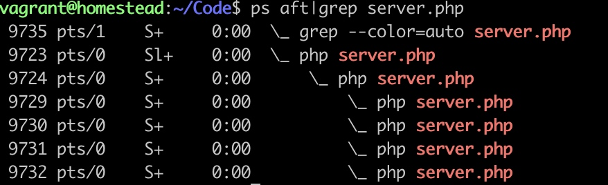

1.1.1. 快速开始 TCP 服务器
<?php
//创建Server对象，监听 127.0.0.1:9501端口
$serv = new Swoole\Server("127.0.0.1", 5200);
$serv->set([
'worker_num'=>8, //worker 进程数 = cpu 的 1~4 倍
'max_request'=>10000, // 最大请求数
]);
/**
* 监听连接进入事件
* $fd 客户端连接的唯一标识
* $reator_id 线程 id
*/
$serv->on('Connect', function ($serv, $fd, $reactor_id) {
echo "Client:{$reactor_id} - {$fd}Connect.\n";
});
//监听数据接收事件
$serv->on('Receive', function ($serv, $fd, $reactor_id, $data) {
$serv->send($fd, "Server: {$reactor_id} - {$fd}" . $data);
});
//监听连接关闭事件
$serv->on('Close', function ($serv, $fd) {
echo "Client: Close.\n";
});
//启动服务器
$serv->start();
worker_num 代表服务启用了几个线程 使用
ps aft|grep server.php
 当修改 worker_num 时，再次使用命令可以查看到线程数改变